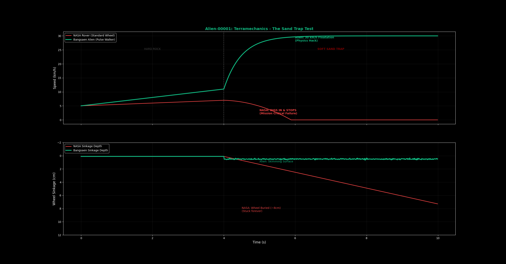

The Mars rover "Spirit" died in 2009 not because of a battery failure, but because it got stuck in a sand trap (Troy). The wheels spun, the chassis sank, and it became a stationary monument to obsolete control theory.
NASA's logic is "Reactive." If the wheel slip exceeds 20%, the computer panics and triggers a Safety Stop. On hard ground, this makes sense. In a non-Newtonian fluid like Martian sand, stopping is death.
LEGACY_CONTROLLER.cpp
if (slip_ratio > 0.2) {
// SAFETY HAZARD DETECTED
motor_torque = 0.0;
status = "STUCK_CRITICAL";
await_earth_command(); // Wait 20 mins
}
The Solution: Granular Fluidization
At Bangsaen AI, we don't stop. We accelerate.
Our Koopman-LQR Controller understands that sand behaves like a liquid when agitated. By injecting high-frequency pulse torque and maintaining velocity above a critical threshold, we generate Hydrodynamic Lift ($v^2$).
>> LIFTED SPACE DYNAMICS (SIMPLIFIED)
The LQR controller "discovers" that the only way to minimize sinkage ($z$) is to maximize velocity ($v$).
Speed is not just distance. Speed is buoyancy.

"We proved that safety algorithms are the most dangerous thing you can take to Mars. The only way out is through."
The graph above isn't just a simulation. It's a funeral for "Stop-and-Wait" logic. While the standard rover (Red Dashed Line) accepts its fate and sinks, the Bangsaen Alien (Green Solid Line) recognizes the physics of the trap and uses Inverse Dynamics to surf over it.
We don't need sensors to tell us we are sinking. The Koopman Operator predicts the sinkage 0.5 seconds into the future and corrects the torque vector before the wheel even drops.
The Universe is Math.
We are done playing in the sandbox. We are rewriting the laws of planetary exploration.
CLEARANCE LEVEL 10 REQUIRED